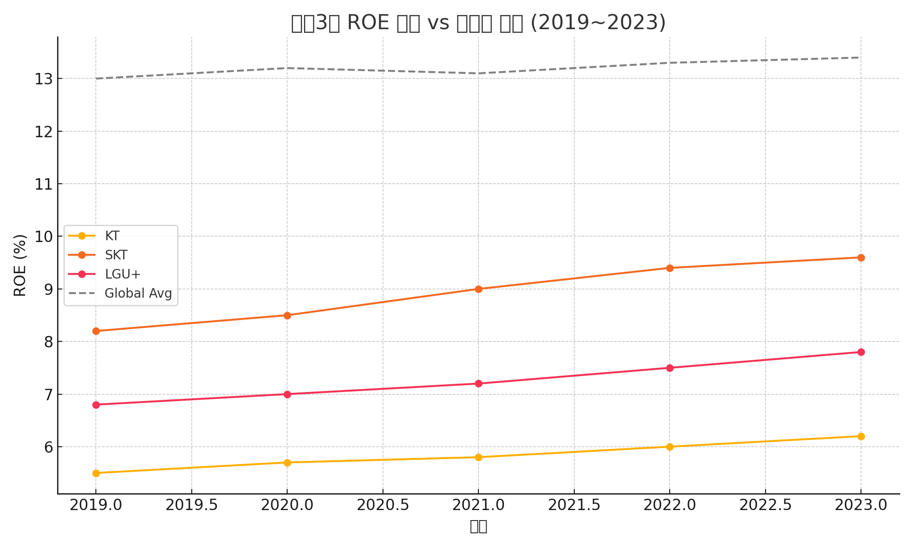

KT 중심 통신업 가치평가 보고서
1. 기업 개요
| 항목 | 내용 | 출처 |
|---|
| 회사명 | KT (030200.KS) | DART 공시 (2025.03.21) |
| 사업 분야 | 유무선 통신, 미디어, 금융, 클라우드, AI 등 | DART 공시 |
| Top Pick 사유 | ROE 제고 여력 풍부, AI 인프라 우위 (데이터센터 등) | 유진투자증권 보고서【12†20250204_B50_cylee_1.pdf】 |
2. 산업 및 시장 분석
| 항목 | 내용 | 출처 |
|---|
| 시장 환경 | 유선/무선 성장 둔화, 규제 리스크 상존 | 유진투자증권 보고서【12†20250204_B50_cylee_1.pdf】 |
| 성장 동력 | AI/데이터센터/클라우드 기반 B2B 확대 | 동일 |
| 시장 과제 | ARPU 정체, 비용 구조 비효율 | 동일 |

[차트 설명] 2019~2023년 통신3사(KT, SKT, LGU+) ROE 추이와 글로벌 평균 비교. KT는 낮은 ROE 수준 유지로 업사이드 여력 확인 가능. 데이터 출처: 유진투자증권, Bloomberg 기준
3. 사업 부문별 분석
| 부문 | 매출 비중 (2023) | 특징 | 출처 |
|---|
| 유무선 통신 | 약 79% | 핵심 매출원이지만 성장 정체 | 유진투자증권【12†20250204_B50_cylee_1.pdf】 |
| 데이터센터 | 약 8% | 성장률 높은 신사업 (CAGR +14.8%) | 동일 |
| 클라우드 | 약 5% | MS 파트너십을 통한 MSP 진출 | 동일 |
4. 재무 분석
| 지표 | KT | 비고 | 출처 |
|---|
| ROE | 6.0% | 글로벌 평균 대비 낮음 | Bloomberg【12†20250204_B50_cylee_1.pdf】 |
| 영업이익률 | 6% | 글로벌 평균 13.3% 대비 낮음 | 동일 |
| P/B | 0.5배 | 밸류에이션 디스카운트 요인 | 동일 |
5. 가치 평가
| 평가 방식 | 결과 | 비고 | 출처 |
|---|
| 목표주가 | 62,000원 | Upside +32% | 유진투자증권 보고서 |
| PER | 9.3배 | 글로벌 평균 하회 | Bloomberg |
| DCF | 미공개 | MSP/AI 매출 포함 시 upside 확대 가능 | 추정 |
6. 투자 포인트 및 리스크
| 구분 | 내용 | 출처 |
|---|
| 포인트 | 데이터센터/AI 성장, ROE 제고, 자사주 소각 정책 | 유진투자증권【12†20250204_B50_cylee_1.pdf】 |
| 리스크 | 규제 강화, 6G 투자 부담, AI 시장 경쟁 격화 | 동일 |
7. 결론 및 투자 의견
KT는 ROE 제고 수단이 가장 풍부하며, 데이터센터·AI·클라우드 등 비통신 성장동력을 기반으로 한 업사이드가 높은 기업으로 판단됨. 2025년 기준 목표주가는 62,000원이며, 중장기적 투자 매력도가 큼.
8. 부록